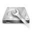
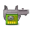

Ubuntu MATE's Picks
There is an abundance of software available for Ubuntu MATE and some people find that choice overwhelming. Listed here are the best-of-breed applications that integrate well with the desktop and complement the software that Ubuntu MATE ships with.And even if you do not find the application you're looking for, choose one of the many software centres to explore even more available for Ubuntu.
More Apps Await.
Connect your computer to the Internet to explore a wide selection of applications for Ubuntu MATE.
Once online, you'll be able to download and install that have been tried & tested for your desktop right here in Welcome. Our picks ensure that this software integrates well the Ubuntu MATE desktop.
Get Connected.
Here's a few things you can check, depending on the type of connection you have:
Wired Connection
- Is the cable securely plugged in?
- Is the router online and can other devices access the network? Try restarting the router.
Wireless Connection
- When disconnected, the applet looks like this:

- You may need to hold the FN key while pressing the function key.
- Here's an example:
Not working at all or experiencing sluggish connections?
Sorry to hear that. You will need a temporary wired connection to install working drivers.
- The Additional Drivers tab may have them available for your system.
- Otherwise, you will need to manually install third party drivers for your hardware, or a download specific package containing the firmware. See Drivers in the Getting Started section for more details.
- Feel free to ask the community if you need assistance.
Accessories
Disks can manage and configure disk drives and media. Format and partition drives. Mount and unmount partitions. Query S.M.A.R.T. attributes.
Gnote is a desktop note-taking application which is simple and easy to use. It lets you organise your notes with Wiki style interconnects.
- Alternative to: Post-it ® notes
Redshift adjusts the color temperature of your screen. The color temperature is set according to the position of the sun. A different color temperature is set during night and daytime. During twilight and early morning, the color temperature transitions smoothly from night to daytime temperature to allow your eyes to slowly adapt.
- Alternative to: f.lux ®
Variety changes the desktop wallpaper regularly, using local or automatically downloaded images. Variety sits conveniently as an indicator in the panel and can be easily paused and resumed. The mouse wheel can be used to scroll wallpapers back and forth. Variety can fetch wallpapers from various online sources, such as Flickr.
VeraCrypt is software for establishing and maintaining an on-the-fly-encrypted volume. The encrpyted volume can be a virtual encrypted disk within a file, a partition or complete device such as a USB stick or disk drive.
- Successor to: TrueCrypt

Zim is a graphical text editor used to maintain a collection of wiki pages. Each page can contain links to other pages, simple formatting and inline images. Pages are stored in a folder structure, like in an outliner, and can have attachments. Creating a new page is as easy as linking to a nonexistent page. All data is stored in plain text files with wiki formatting. Various plugins provide additional functionality, like a task list manager, an equation editor, a tray icon, and support for version control. Zim can be used to: Keep an archive of notes, Take notes during meetings or lectures, Organize task lists, Draft blog entries and emails, Do brainstorming.
Education
Stellarium is a planetarium for your computer that renders 3D photo-realistic skies in real-time so you really see what you can see with your eyes, binoculars or a small telescope. It features a default star catalogue with over 600 thousand stars, information about the brightest stars (spectral type, distance, etc.), downloadable star catalogue extensions, for up to 210 million stars, all New General Catalogue (NGC) objects, images of almost all Messier objects and the Milky Way, real time positions of the planets and their satellites, 13 different cultures with their constellations, artistic illustrations of the 88 Western constellations, very realistic atmosphere, sunrise and sunset, and 7 panoramic landscapes (more can be made or downloaded from the website). Stellarium should not be used for very high accurate calculation or ephemerids like eclipse predictions. However, it is the ideal program to prepare an observation evening with naked eye, binocular, or small telescope.
Games
0 A.D is a free, open-source, cross-platform real-time strategy (RTS) game of ancient warfare. In short, it is a historically-based war/economy game that allows players to relive or rewrite the history of Western civilisations, focusing on the years between 500 B.C. and 500 A.D. The project is highly ambitious, involving state-of-the-art 3D graphics, detailed artwork, sound, and a flexible and powerful custom-built game engine.

Minecraft is a game about breaking and placing blocks. At first, people built structures to protect against nocturnal monsters, but as the game grew players worked together to create wonderful, imaginative things. It can also be about adventuring with friends or watching the sun rise over a blocky ocean. It's pretty. Brave players battle terrible things in The Nether, which is more scary than pretty. You can also visit a land of mushrooms if it sounds more like your cup of tea.
- Server available: A one-click install for the Official Minecraft Server is in the Servers section.
Play on Linux is a frontend for wine. It permits you to easily install Windows Games and software on Linux.

PySolFC is a collection of more than 1000 solitaire card games. There are games that use the 52 card International Pattern deck, games for the 78 card Tarock deck, eight and ten suit Ganjifa games, Hanafuda games, Matrix games, Mahjongg games, and games for an original hexadecimal-based deck. Its features include modern look and feel, multiple cardsets and tableau backgrounds, sound, unlimited undo, player statistics, a hint system, demo games, a solitaire wizard, support for user written plug-ins, an integrated HTML help browser, and lots of documentation.

Steam is the ultimate entertainment platform. Play games, connect with friends, even create and share content of your own. Join 50 million of your closest friends on Steam. Enjoy exclusive deals, automatic game updates, and cross-platform multiplayer. Plus, now you take advantage of Big Picture mode, designed for use with your TV and game controller.
Install Reinstall Remove Install Reinstall Remove
SuperTuxKart is a free 3D kart racing game, with a focus on having fun over realism. You can play with up to 4 friends on one PC, racing against each other or just trying to beat the computer; single-player mode is also available. See the great lighthouse or drive through the sand and visit the pyramids. Race underground or in space, watching the stars pass by. Or rest under the palm trees on the beach, watching the other karts overtake you. But don't eat the bananas! Watch for bowling balls, plungers, bubble gum and cakes thrown by your opponents. You can do a single race against other karts, compete in one of several Grand Prix, try to beat the high score in time trials on your own, play battle mode against your friends, and more!
Graphics

Blender is an integrated 3d suite for modelling, animation, rendering, post-production, interactive creation and playback (games). Blender has its own particular user interface, which is implemented entirely in OpenGL and designed with speed in mind. Python bindings are available for scripting; import/export features for popular file formats like 3D Studio and Wavefront Obj are implemented as scripts by the community. Stills, animations, models for games or other third party engines and interactive content in the form of a standalone binary are common products of Blender use.
- Alternative to: Adobe® After Effects
Dia is an editor for diagrams, graphs, charts etc. There is support for UML static structure diagrams (class diagrams), Entity-Relationship diagrams, network diagrams and much more. Diagrams can be exported to postscript and many other formats.
- Alternative to: Microsoft® Office Visio®

Darktable is a virtual lighttable and darkroom for photographers. Darktable manages your digital negatives in a database and lets you view them through a zoomable lighttable. it also enables you to develop raw images and enhance them. It tries to fill the gap between the many excellent existing free raw converters and image management tools (such as ufraw or f-spot). The user interface is built around efficient caching of image metadata and mipmaps, all stored in a database. the user will always be able to interact, even if the full resolution image is not yet loaded. All editing is fully non-destructive and only operates on cached image buffers for display. the full image is only converted during export. High-dynamic range, and standard image formats such as jpeg are also supported. The core operates completely on floating point values, so darktable can not only be used for photography but also for scientifically acquired images or output of renderers (high dynamic range).
- Alternative to: Adobe® Lightroom

GIMP is an advanced picture editor. You can use it to edit, enhance, and retouch photos and scans, create drawings, and make your own images. It has a large collection of professional-level editing tools and filters, similar to the ones you might find in Photoshop. Numerous fine-control settings and features like layers, paths, masks, and scripting give you total control over your images. Many image file formats are supported, including JPEG, Photoshop (.psd), and Paint Shop Pro (.psp) files. It can also be used to scan and print photos. The CMYK plug-ins are also included.
- Alternative to: Adobe® Photoshop
Inkscape loads and saves a subset of the SVG (Scalable Vector Graphics) format, a standard maintained by the WWW consortium. Inkscape user interface should be familiar from CorelDraw and similar drawing programs. There are rectangles, ellipses, text items, bitmap images and freehand curves. As an added bonus, both vector and bitmap objects can have alpha transparency and can be arbitrarily transformed. Inkscape supports multiple opened files and multiple views per file. Graphics can be printed and exported to png bitmaps. Some of the import and export features are provided using the packages dia, libwmf-bin, pstoedit, skencil, imagemagick, and perlmagick.
- Alternative to: Adobe® Illustrator
Rapid Photo Downloader can be used by both professional and amateur photographers to download photos and videos from multiple cameras, memory cards and Portable Storage Devices simultaneously. It provides many flexible, user-defined options for subfolder creation, photo and video renaming, and backup.

Scribus is a desktop page layout program with the aim of producing commercial grade output in PDF and Postscript. Scribus can be used for many tasks; from brochure design to newspapers, magazines, newsletters and posters to technical documentation. It has sophisticated page layout features like precision placing and rotating of text and/or images on a page, manual kerning of type, bezier curves polygons, precision placement of objects, layering with RGB and CMYK custom colors. The Scribus document file format is XML-based. Unlike proprietary binary file formats, even damaged documents, can be recovered with a simple text editor. Scribus supports professional DTP features, such as CMYK color and a color management system to soft proof images for high quality color printing, flexible PDF creation options, Encapsulated PostScript import/export and creation of 4 color separations, import of EPS/PS and SVG as native vector graphics, Unicode text including right to left scripts such as Arabic and Hebrew via freetype. Graphic formats which can be placed in Scribus as images include PDF, Encapsulated Post Script (eps), TIFF, JPEG, PNG and XPixMap(xpm), and most bitmap types. Printing, PDF and SVG creation are done via custom driver libraries and plug-ins, giving Scribus inventive features: the abilities to include presentation effects with PDF output, fully scriptable interactive PDF forms, SVG vector file output. The internal printer drivers fully support Level 2 and Level 3/PDF 1.4 postscript features including transparency and font embedding. There is easy to use drag and drop scrapbook for frequently used items such as text blocks, pictures and custom shaped frames.
- Alternative to: Adobe® InDesign

Sweet Home 3D is an interior design application for quickly choosing and placing furniture on a house 2D plan drawn by the end-user, with a 3D preview.
Internet

Adobe® Flash® Player is a cross-platform, browser-based
application runtime that provides uncompromised viewing of
expressive applications, content, and videos across browsers
and operating systems. This package provides plugins compatible
with both the Chromium and Firefox web browsers. Ubuntu MATE Welcome
will also install libhal1-flash required by libadobecp
(which libflashplayer.so retrieves from the Internet) for
playing back DRM content from streaming services such as Amazon Prime
Instant Video.

BitTorrent Sync is a simple tool that applies p2p protocol for direct live folder sync with maximum security, network speed and storage capacity.

Chromium web browser is the open-source version of Google Chrome. Chromium is an open-source browser project that aims to build a safer, faster, and more stable way for all Internet users to experience the web.

Dropbox lets you bring your photos, documents, and videos anywhere and share them easily.

FileZilla is a full-featured FTP client with an easy-to-use GUI. Supports FTP, FTP over SSL/TLS (FTPS) and SSH File Transfer Protocol (SFTP). IPv6 support. Available in more than 40 languages. Supports resume and transfer of large files >4GB. Easy to use Site Manager and transfer queue. Bookmarks. Drag & drop support. Speed limits. Filename filters. Directory comparison. Network configuration wizard. Remote file editing. Keep-alive. HTTP/1.1, SOCKS5 and FTP Proxy support. Logging to file. Synchronized directory browsing. Remote file search. Tabbed interface to connect to multiple servers.
Firefox delivers safe, easy web browsing. A familiar user interface, enhanced security features including protection from online identity theft, and integrated search let you get the most out of the web.
Gobby is an editor which allows one to edit text documents and source files collaboratively over a network. All users could work on the file simultaneously without the need to lock it. The parts the various users write are highlighted in different colours and it supports syntax highlighting of various programming and markup languages.

Google Chrome is a browser that combines a minimal design with sophisticated technology to make the web faster, safer, and easier. If you are a Netflix subscriber then Google Chrome is currently the only browser available for Ubuntu MATE that fully supports Netflix.

Google Hangouts is a browser plugin, for Firefox and Google Chrome, that enables you to have voice and video conversations from your computer.

Google Music Manager is a simple application for adding the music files on your computer to Google Music. Use Music Manager to upload your favorite songs from your computer to your Google Play library. You can upload up to 50,000 songs and listen on your mobile device, computer, or Chromecast.
- Alternative to: Apple iTunes

Iced Tea Plugin is a web browser plugin to execute Java applets, supporting LiveConnect/JavaScript. It is targeted for browsers that support the NPAPI, such as Firefox.

Insync is an application that syncs your Google Drive files to your computer. It has more advanced features than Google's official client such as multiple account support, Google Doc conversion, symlink support, and built in sharing. Insync is a commercial application, if you want to continue using it after the evaluation period you will have to pay for it.
- Equivalent to: Google Drive Client
Mumble is an open source, low-latency, high quality
voice chat software. It features noise suppression, encrypted
connections for both voice and instant messaging, automatic
gain control and low latency audio with support for multiple
audio standards. Mumble includes an in-game overlay
compatible with most open-source and commercial 3D
applications. Mumble is just a client and uses a non-standard
protocol. You will need a dedicated server to talk to other
users. Server functionality is provided by the package
mumble-server.
Opera is a fast, secure, and user-friendly web browser. It includes web developer tools, news aggregation, and the ability to compress data via Opera Turbo on congested networks.

Remmina is a remote desktop connection client able to display and control a remote desktop session. It supports multiple network protocols in an integrated and consistent user interface. Currently RDP, VNC, NX, XDMCP and SSH protocols are supported.
- Alternative to: Microsoft® Remote Desktop

Skype is software that enables the world's conversations. Millions of individuals and businesses use Skype to make free video and voice calls, send instant messages and share files with other Skype users. Every day, people also use Skype to make low-cost calls to landlines and mobiles.

SpiderOakONE is an advanced automated offsite backup system with a "Zero Knowledge" approach to encryption and privacy. Capabilities include archiving multiple devices with a unified and de-duplicated storage repository, preservation of historical versions and deleted files, configurable multi-platform file synchronization, web file sharing, and a rich command line and graphical interface.

Syncthing replaces proprietary sync and cloud services with something open, trustworthy and decentralized. Your data is your data alone and you deserve to choose where it is stored, if it is shared with some third party and how it's transmitted over the Internet.

Telegram is a messaging app with a focus on speed and security, it's super fast, simple and free. You can use Telegram on all your devices at the same time your messages sync seamlessly across any of your phones, tablets or computers. With Telegram, you can send messages, photos, videos and files of any type (doc, zip, mp3, etc), as well as create groups for up to 200 people. You can write to your phone contacts and find people by their usernames. As a result, Telegram is like SMS and email combined and can take care of all your personal or business messaging needs.
- Alternative to: WhatsApp
Tor Browser lets you use Tor without needing to install any additional software. It comes with a pre-configured web browser to protect your anonymity, and is self-contained. Tor Browser protects you by bouncing your communications around a distributed network of relays run by volunteers all around the world: it prevents somebody watching your Internet connection from learning what sites you visit, it prevents the sites you visit from learning your physical location, and it lets you access sites which are blocked.

uGet is a simple, lightweight and easy-to-use download manager. It provides the following features: resume downloads, queue downloads, classify downloads in categories, Firefox integration (through Flashgot plugin), clipboard monitoring, import downloads import from HTML files and batch download.
Office

Calibre is a complete e-library solution. It includes library management, format conversion, news feeds to e-book conversion as well as e-book reader sync features. Calibre is primarily an e-book cataloging program. It manages your e-book collection for you. Calibre can convert from a huge number of formats to a huge number of formats. It supports all the major e-book formats. Calibre supports syncing to a large number of e-reader device. Syncing supports updating metadata on the device from metadata in the library and creation of collections on the device based on the tags defined in the library. Calibre automatically chooses the best format when uploading to the device, auto-converting if required. Calibre has also a built-in e-book viewer that can display all the major e-book formats.
- Alternative to: Adobe® Digital Editions

gLabels is a lightweight program for creating labels, barcodes, business cards and media covers. It is designed to work with various laser/ink-jet peel-off label and business card sheets that you'll find at most office supply stores. gLabels also supports mail merge from sources such as CSV files and vCards.

Gnucash is personal and small-business financial-accounting software. Designed to be easy to use, yet powerful and flexible, GnuCash allows you to track bank accounts, stocks, income and expenses. As quick and intuitive to use as a checkbook register, it is based on professional accounting principles to ensure balanced books and accurate reports. It can track finances in multiple accounts, keeping running and reconciled balances. There is support for customer, vendor and employee processing. It has double-entry accounting, reports, graphs, transaction matching, scheduled transactions, financial calculations and QIF/OFX/HBCI import.
- Alternative to: Intuit® Quicken®

Gramps is an Open Source genealogy program created, developed and governed by genealogists. It is extremely flexible and strives to produce a genealogy program that is both intuitive for hobbyists and feature-complete for professional genealogists. Gramps has the ability to import GEDCOM files exported from many proprietary genealogy programs and can produce a large number of reports in many popular formats.

Planner is a Project Management application that supports Gantt charts and resource allocation. Among its important features are the definition of tasks with start/end dates and durations, dependancies between tasks, sub-tasks can also be defined, project calendars with holidays, definition of resources, assignment of resources to tasks, resource specific calendars.
Programming

Bazaar is a distributed version control system designed to be easy to use and intuitive, able to adapt to many workflows, reliable, and easily extendable.
Geany is a small and lightweight integrated development environment. It was developed to provide a small and fast IDE, which has only a few dependencies from other packages. The basic features of Geany are: syntax highlighting, code completion, auto completion,call tips, folding, symbol lists, embedded terminal emulation and many supported languages C/C++, HTML/CSS, Java. Markdown, Pascal, PHP, Python, Perl, Pascal.

Git is popular version control system designed to handle very large projects with speed and efficiency; it is used for many high profile open source projects, most notably the Linux kernel. Git falls in the category of distributed source code management tools. Every Git working directory is a full-fledged repository with full revision tracking capabilities, not dependent on network access or a central server.
Glade is a RAD tool to enable quick and easy development of user interfaces for the GTK+ toolkit. The user interfaces designed in Glade are stored in the well-known XML format, enabling easy integration with external tools.

Meld is a graphical diff viewer and merge application. It supports 2 and 3-file diffs, recursive directory diffs, diffing of directories under version control (Bazaar, Codeville, CVS, Darcs, Fossil SCM, Git, Mercurial, Monotone, Subversion), as well as the ability to manually and automatically merge file differences.
Poedit is an editor for gettext catalogs (.po files). It aims to provide a convenient approach to editing catalogs. It features UTF-8 support, fuzzy and untranslated records highlighting, whitespace highlighting, references browser, header editing and can be used to create new catalogs or update existing catalogs from source code with a single click.

Sound and Video
Asunder is a graphical Audio CD ripper and encoder. It can be used to save tracks from Audio CDs. Supports WAV, MP3, Ogg Vorbis, FLAC, and Wavpack audio files. Uses CDDB to name and tag each track. Can encode to multiple formats in one session. Creates M3U playlists. Allows for each track to be by a different artist.
Audacity is a multi-track audio editor It is designed for easy recording, playing and editing of digital audio. Audacity features digital effects and spectrum analysis tools. Editing is very fast and provides unlimited undo/redo.
Audio Recorder allows you to record your favourite music or audio to a file. It can record audio from your system soundcard, microphones, browsers and webcams. Put simply; if it plays out of your loudspeakers you can record it. This program has a timer that can start, stop or pause recording on certain conditions such as audio level, file size and clock time. This recorder can automatically record your Skype calls. It supports several audio (output) formats such as OGG audio, Flac, MP3 and WAV..

Codecs includes a library that offers a complete, cross-platform solution to decode, encode, record, convert and stream audio and video. It also includes a MP3 audio decoder that permits the playback of MPEG 1 audio layer III (MP3) streams in Rhythmbox.

Handbrake is a tool for converting video from nearly any format to a selection of modern, widely supported codecs. Handbrake can process most common multimedia files and any DVD or BluRay sources that do not contain any kind of copy protection.

libdvdcss2 is a simple library designed for accessing DVDs like a block device without having to bother about the decryption. It will enable playback of DVD video in VLC.

MakeMKV is your one-click solution to convert video that you own into free and patents-unencumbered format that can be played everywhere. MakeMKV is a format converter, otherwise called "transcoder". It converts the video clips from proprietary (and usually encrypted) disc into a set of MKV files, preserving most information but not changing it in any way. The MKV format can store multiple video/audio tracks with all meta-information and preserve chapters. There are many players that can play MKV files nearly on all platforms, and there are tools to convert MKV files to many formats, including DVD and Blu-ray discs. MakeMKV for Linux is in perpetual beta and does require an activation key, which is always updated and on the MakeMKV forum.
- Alternative to: Slysoft AnyDVD HD

Pithos is a native Pandora Radio client for Linux. It's more lightweight than the Pandora.com web client, and integrates with desktop features such as media keys, notifications, and the sound menu. Currently Pandora Radio is only available in U.S., Australia and New Zealand.

Pitivi is non-linear audio/video editor based on graphs of filters which operate on media data. Pitivi allows users to easily edit audio/video projects and provides several ways of creating and modifying a timeline. Ranging from a simple synopsis view (a-la iMovie) to the full-blown editing view (aka Complex View) which puts you in complete control of your editing.
- Alternative to: Adobe® Premiere Elements
PulseAudio Volume Control is a simple volume control tool (mixer) for the PulseAudio sound server. In contrast to classic mixer tools this one allows you to control both the volume of hardware devices and of each playback stream separately. It also allows you to redirect a playback stream to another output device without interrupting playback.

SimpleScreenRecorder is a feature-rich screen recorder that can record the entire screen or part of it, or record OpenGL applications directly. The recording can be paused and resumed at any time. Many different file formats and codecs are supported.

System Tools
Bleachbit deletes unnecessary files to free valuable disk space, maintain privacy, and remove junk. It removes cache, Internet history, temporary files, cookies, and broken shortcuts. Beyond simply erasing junk files, BleachBit wipes free disk space (to hide previously deleted files for privacy and to improve compression of images), vacuums Firefox databases (to improve performance without deleting data), and securely shreds arbitrary files.
- Alternative to: Piriform CCleaner

HardInfo is a small application that displays information about your hardware and operating system. Currently it knows about PCI, ISA PnP, USB, IDE, SCSI, Serial and parallel port devices.
KDE Connect Indicator connects smartphones to your desktop to integrate with your smartphones and similar devices. At the moment it only supports Android based devices.
- Requires: KDEConnect installed on your smartphone and Indicators enabled via MATE Tweak.

Schduled Tasks is a UI for configuring a users
crontab so that tasks run at set intervals. It
has templates support so that you won't have to create the
same task again and again. If run as root, you can edit any
user's crontab and at tasks.
Intervals are human readable strings like Every hour
instead of 0 * * * *. There is an Advanced
mode for crontab experts. A calendar allows you
to choose the day you want a task executed.

Terminator is a little project to produce an efficient way of filling a large area of screen space with terminals. The user can have multiple terminals in one window and use key bindings to switch between them.

VirtualBox is a powerful PC virtualization solution allowing you to run a wide range of PC operating systems on your Linux system. This includes Windows, Linux, FreeBSD, DOS, OpenBSD and others. VirtualBox comes with a broad feature set and excellent performance, making it the premier virtualization software solution on the market.
- Alternative to: VMware Workstation
Universal Access

Enable Viacam (aka eViacam) is a mouse replacement program that moves the pointer as you move your head. It works on a standard computer equipped with a web camera. No additional hardware is required. Based on the award winning Facial Mouse software.

Workrave is a program that assists in the recovery and prevention of Repetitive Strain Injury (RSI). The program frequently alerts you to take micro-pauses, rest breaks and restricts you to your daily limit.
Servers

Caja Share is an extension that allows you to quickly share a folder from the Caja file manager. It uses Samba, so your folders can be accessed by any operating system.
- Alternative to: Windows® Simple File Sharing
Minecraft Server installs the official server so you can create your own multi-player world.
X2Go Server is a remote computing environment with support for session resuming, low bandwidth support, session brokerage, client-side mass storage mounting, client-side printing, audio redirection and authentication by smartcard or USB stick.
- Alternative to: Citrix Workspace Cloud
Software Centres
Easy to navigate graphical interfaces to browse a wide selection of software availiable for your operating system. Recommended for new users.

App Grid will help you discover and install apps for Ubuntu MATE. Written from scratch, App Grid delivers stunning startup speed, and swift reactions throughout. A clean and simple design makes App Grid a joy to use. No confusion, no frustration. Discover the best of Open Source in the Ubuntu archives. Or purchase additional apps via Ubuntu One. Complete with ratings, reviews and screenshots.
- Alternative to: Ubuntu Software Centre
Ubuntu Software Centre lets you browse and install thousands of free and paid applications available for Ubuntu. You can view available software by category, or search quickly by name or description. You can also examine the software already installed, and remove items you no longer need.
Package Managers
Know exactly what you're looking for? Package Managers are primarilly used by power users.
Synaptic is a graphical package management program
for apt. It provides the same features as the
apt-get command line utility, allowing you to
install, upgrade, remove or purge individual packages; modify
repository settings; view change logs and even lock a package
to a specific version.
Miscellaneous Tasks
This section contains operations that can fix common problems should you encounter an error while upgrading or installing new software.
Outdated Package Lists
Your repository lists may be out of date, which can cause Not Found errors and outdated version information when trying to install new or newer versions of software. This is particularly the case when Ubuntu MATE connects online for the first time after installation.
Update the repository lists:
sudo apt-get update
Broken Packages
When a previous installation or removal was interrupted (for instance, due to power failure or loss of Internet connection), further software cannot be added or removed without properly re-configuring these broken packages. If necessary, you may need to also resolve dependencies and install any missing packages in order for the software to run properly.
Configure packages that were unpacked but not configured:
sudo dpkg --configure -a
Download and install broken dependencies:
sudo apt-get --fix-broken install
In addition, listed below are terminal equivalent commands that otherwise appear in the Software Updater.
Upgrade all packages that have a new version available:
sudo apt-get dist-upgrade
Upgrade to a new release of Ubuntu MATE:
sudo do-release-upgrade